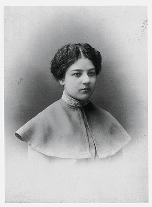

О́льга Влади́мировна Ро́занова (21 июня 1886, Меленки, Владимирская губерния — 7 ноября 1918, Москва) — живописец, график, художник книги и декоративно-прикладного искусства, автор статей по искусству, поэтесса. Одна из крупнейших представительниц русского авангарда с уникальным колористическим талантом. Пройдя несколько направлений авангарда, вышла через супрематизм к цветописи, на несколько десятилетий предвосхитив развитие абстрактного искусства. В 1917 году создала один из шедевров беспредметной живописи XX века — картину «Зелёная полоса».
